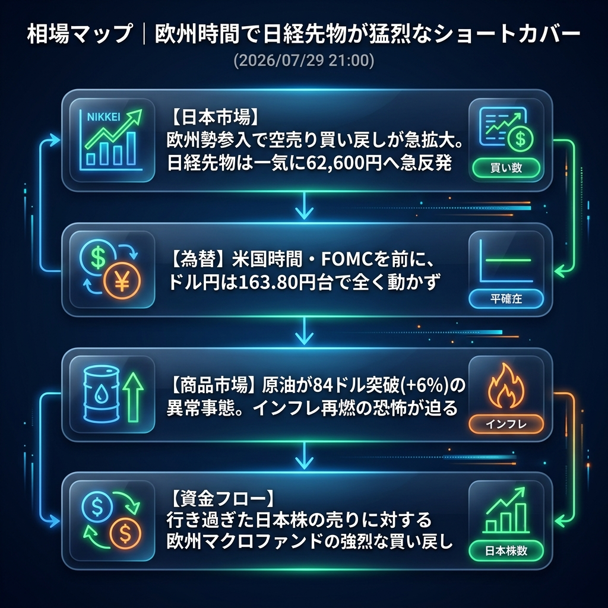

日経平均は大引けで61,434円まで暴落しましたが、欧州時間に入ると海外マクロファンド等による猛烈な「先物の買い戻し（ショートカバー）」が発生し、CME先物は一気に62,600円台へと1,000円幅の急反発を見せています。
一方で、原油が84ドルを突破する異常事態となっており、今夜のFOMCに向けたインフレ再燃の恐怖が市場全体を覆い始めています。
「行き過ぎた日本株売りのショートカバー」と「原油84ドル突破がもたらすFOMCへの暗雲」。
東京市場大引け後、欧州勢の参入とともに日経先物は買い戻しラッシュとなり、急ピッチで値を戻しています。売られ過ぎの反動（自律反発）がようやく出た形です。
一方で、米ダウ先物は-0.65%と軟調に転じており、原油のさらなる急伸（84.16ドル、+6%超）が米国株全体の重石となっています。ドル円は163.80円で膠着したまま、運命のFOMCを待ち構えています。
| 指数・銘柄 | 現在値 | 前回比（前日比） | 騰落率 | 確認事項 |
|---|---|---|---|---|
| S&P 500 (ES=F) | 7,464.50 | -0.75 | -0.01% | ほぼ横ばい |
| Nasdaq (NQ=F) | 27,906.75 | -15.25 | -0.05% | FOMC前に動きづらい |
| Dow (YM=F) | 52,599.0 | -345.0 | -0.65% | 原油高を嫌気し下落 |
| 日経225現物 | 61,434.19 | -930.73 | -1.49% | 大引け。連日の急落 |
| CME日経225先物 | 62,600.0 | +55.0 | +0.09% | 【急反発】欧州時間で猛烈な買い戻し |
| USD/JPY | 163.809 | -0.005 | 0.00% | FOMCと介入警戒で完全膠着 |
| EUR/USD | 1.1382 | -0.0013 | -0.11% | 小幅なドル高推移 |
| 金 | 4,080.3 | -18.3 | -0.45% | ドル高・金利高で軟調 |
| 原油 | 84.16 | +4.90 | +6.18% | 【異常事態】インフレ再燃の象徴 |
| BTCUSD | 64,231.55 | +378.06 | +0.59% | 64,000ドル台へ回復 |
今夜のハイライトは、なんといっても「FOMC（米連邦公開市場委員会）」です。パウエル議長が、最近のインフレ鈍化を評価して「9月利下げ」の強いシグナルを出すかどうかが焦点でしたが、足元の原油急伸（84ドル突破）が大きなノイズとなっています。
もしパウエル議長が原油高を理由にインフレ警戒姿勢を崩さなかった場合、タカ派サプライズとなり、株安・ドル高急進のシナリオ（ドル円164円突破→介入発動）のリスクが一気に跳ね上がります。
FOMCで明確なハト派（9月利下げ確実）メッセージが出た場合。米金利が急低下し、ドル円は介入なしで162円台へ急落。米国株は原油高を無視してハイテク主導で爆上げする「ゴルディロックス」相場が再来します。